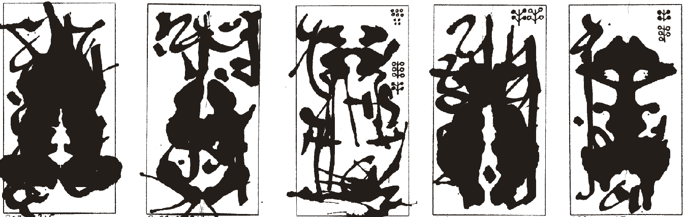

2024 01 05
It's a new year, and while I'm still taking a break from new prints, I thought I'd try making my update feed a little nicer, including putting a backlog of my update posts on their own page.
For my RSS folks: lemme know how things look on your end, and I appreciate your patience as I slowly troubleshoot any issues!
In the meanwhile, enjoy these offerings for Eris I've been making to start the day.
